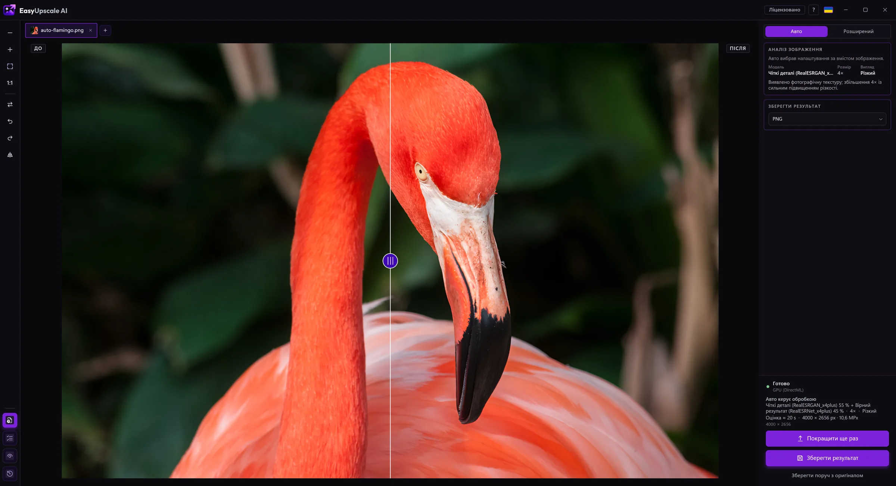

Покращення старих фотографій
Старі фото, скани та знімки з телефонів багаторічної давності часто малі, зернисті або зіпсовані стисканням. EasyUpscale AI збільшує їх, прибирає шум і підвищує різкість.

Завантажити безкоштовно для Windows · Купити ліцензію · 14,99 €
Як це зробити
- Відскануйте або сфотографуйте оригінал і відкрийте файл в EasyUpscale AI.
- Режим Auto розпізнає пошкоджений чи шумний знімок і обирає модель для відновлення. У розширеному режимі (з ліцензією) можна обрати модель SwinIR realSR, створену для старих, шумних і зіпсованих JPEG фото.
- Шумне фото спершу очищується, а потім повертається дрібне зерно, щоб результат не виглядав намальованим.
Чесно
- Результат — це покращення, а не точна реконструкція. ШІ не може надійно дописати відсутні частини облич і деталей.
- Збільшення 2× безкоштовне, 4× потребує ліцензії (14,99 €, одноразово).
- Оригінал не перезаписується; результат ви зберігаєте як новий файл.
Конфіденційність
Сімейні фото залишаються на вашому комп'ютері. Нічого не завантажується.